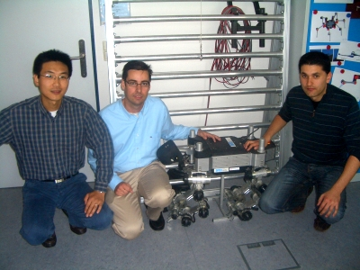
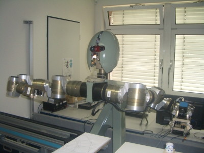
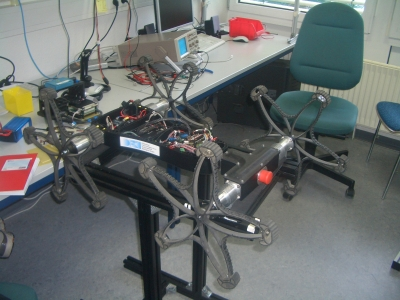
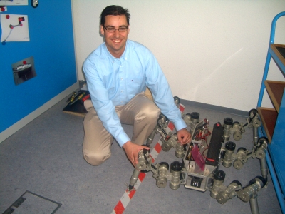
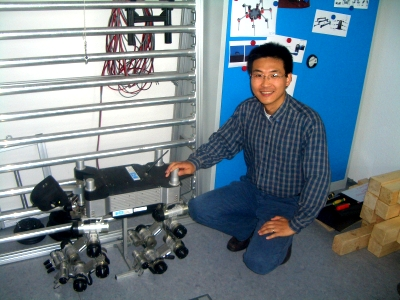

Esta semana estoy en Hamburgo, ejerciendo de profesor Erasmus. El martes 16 de Junio aprovechamos Houxiang y yo para hacer una visita al Robotics Innovation Center de Bremen. Jose de Gea fue una vez más el que nos organizó la visita y nos mostró los espectaculares robots que están desarrollando (¡¡muchísimas gracias otra vez, Jose!!)

Este es un prototipo de un robot con dos brazos de siete grados de libertad cada uno. Están trabajando en que pueda coordinar correctamente ambos brazos para realizar tareas de manipulación mediante visión.

Este es Asguard, que utiliza whegs para desplazarse por terrenos complicados e incluso por agua.

Además de ver a SCORPIO (todo un clásico), en esta foto estoy junto a una nueva versión que tiene sólo 6 patas.

Y tampoco podía faltar la tradicional foto con Aramies. Ni siquiera Houxiang se pudo resistir a sacarse una 😉
Jose nos enseñó también la sala que tienen con una representación de una parte de la superficie de la luna donde pruebas los robots diseñados para enviarlos algún día al espacio. Fue espectacular. Sin embargo, aunque sacamos unas fotos muy interesantes, no las puedo publicar. Pero yo en mi vida había visto nada semejante. Simplemente ESPECTACULAR.
Después de la visita, di una charla-demo infomal sobre los robots modulares (“Live modular robots!“). Claro que, al lado de los robots que tienen allí, los robots modulares parecen juguetitos 🙂
Sólo puedo concluir de una manera: Dando otra vez las gracias a Jose de Gea por su tiempo y por organizar esta increíble visita 😉
He puesto más fotos en este álbum.